Hack the North is Canada's largest hackathon held at the University of Waterloo. We bring over 1000 students from over 22 countries to build and create over a period of 36 hours.
During the summer, I was given the opportunity to redesign the visual and user experience of the Hack the North 2017 mobile app. I worked with Moez Bhatti, who lead the design and development of the mobile app. The mobile app is used for the day-of event and there are many features that would assist the hacker at the event such as live updates, school and building maps, and mentorship. For this redesign, I was mainly in charge of the mentorship feature.
2016 Mobile App
When I was assigned this project, my design lead told me that the user experience of the mobile app can definitely be improved a lot. I started off this project with playing around with the old app and trying to navigate to different features of the app.
Sign-in Flow
The old flow for signing into the account was inefficient as you had to click on the "Sign In" button, enter your hacker email, click on "Next", enter your password, and then click on "Log In". You can log in much faster if you are able to enter your email and password on one screen and then click on one button that says "Login".
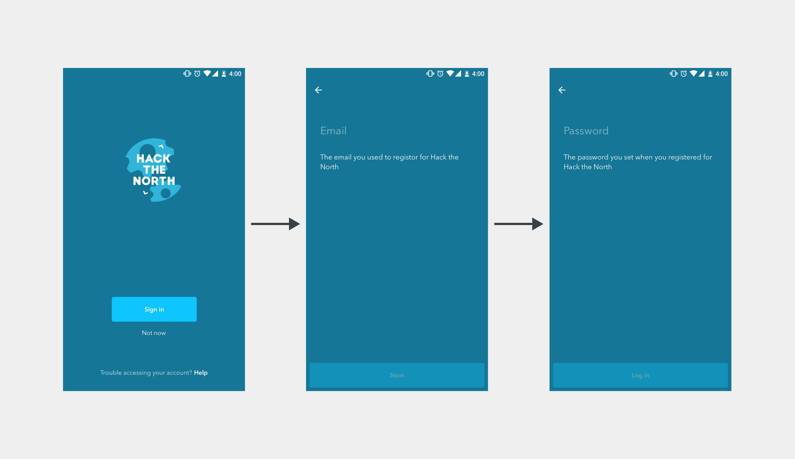2016 Sign-in Flow
Navigation
I noticed that the navigation was inconsistent. There was both a navigation drawer and bottom navigation bar (this pattern could be used depending on the context but I didn't think that this was the right fit), and a tab navigation for only the mentorship feature of this app. I personally don't like navigation drawers as this pattern hides other features of apps. What was needed for the new app is a consistent navigation that would allow the user to easily navigate between features. The 2016 navigation did not work as the tab navigation in mentorship did not have a bottom navigation so the user is not able to jump between other features of the app in one click.
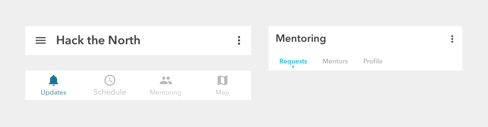2016 Navigation
Updates
The home page of the mobile app consisted of live updates for the event. This feature of the app is useful as it allows us to update hackers on important information such as workshop or event times or locations, schedule changes or information on meal time. I thought that some posts were too text heavy (e.g. far left screen) which would make some posts a little harder to read. I also thought that the format for some posts such as workshops were hard to read as well because they were written in a long paragraph instead of them being listed. Anothing thing I noticed is that some posts had tags in them. You were not able to click on them and if you were able to, it should filter out posts based on the tag such as food updates, or workshop updates.
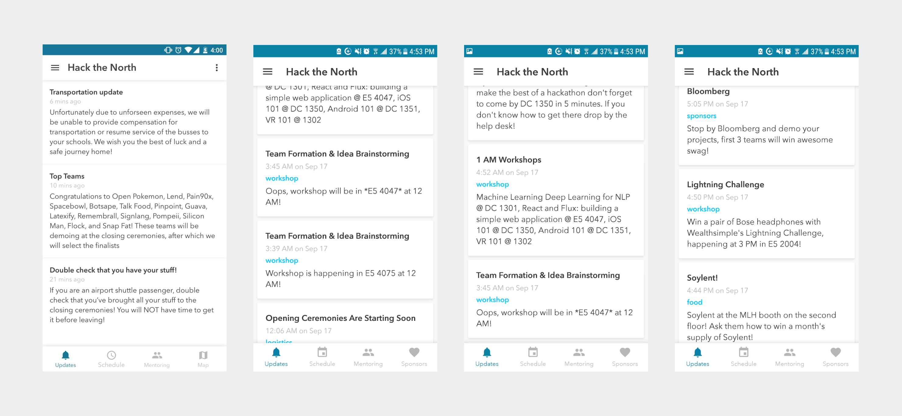2016 Updates
Mentoring
One great feature of the app is being able to request mentorship from other hackers or sponsors. If a hacker is having problems with their hack and needs assistance, they are able to request for help. When you request for help, there is a field for putting in your location. This is not a good idea because some hackers could be very vague about their location or they may not even be there when the mentor comes to help. There needs be a way for the hacker to communicate with the mentor when they need to find each other.
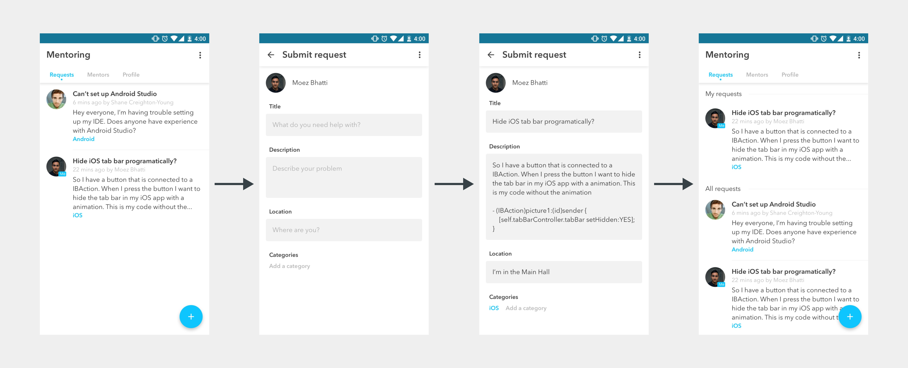2016 Mentoring
Based on some feedback from last year, these are the main paint points of last year's mentoring feature:
- Mentors had difficulty finding hackers with just the "location" field specified in the app
- Hackers requested help and did not get it; The exact reason is unknown, likely a combination of logistical reasons, or availability of mentors
- Poor communication for:
- Letting hackers know what was happening (e.g. if mentor was on their way) once app showed that their claim was picked up
- Guiding mentors in what to do once they picked up a claim (i.e. should clearly indicate where they should go or how they should contact the hacker)
- No clear place to find mentors if app didn't work, many hackers requested help from organizers
2016 Mentor Requests Screens
One of the biggest problems with the mentor request section is that requests are ordered from newest to oldest. Request should be ordered from oldest to newest as the older requests should be prioritized since the hackers have been waiting for much longer. It would also be great if mentors can filter requests by language, framework, or type of request (e.g. design, hardware, code).
Wireframes
Low-fidelity
Some screens were simple enough for me to go straight into making high-fi mockups but I wanted to try out different layouts for some features of the app. I wanted to change the layout of mentoring and as well as the user's profile.
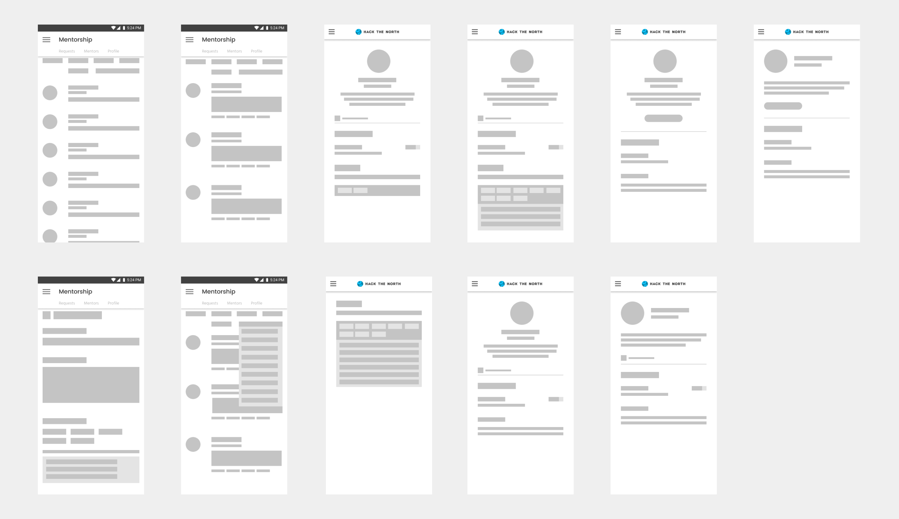Low-Fi mockups of Mentoring and Profile
High-fidelity Iterations
Based on feedback I received from the design and mobile team, I reiterated the high-fidelity mockups multiple times. Some screens did not make it to the final design such as the FAQ and Sponsors screen.

Multiple reiterations of my screens
Final Design
Style Guide & Components
Every year at Hack the North, we change the branding of our organization slightly such as the typefaces we use on our website. I followed the style guide and customized it as well for the mobile app. Below are the colours, typefaces, navigation, and components I used in designing the mobile app. Note: The colours, navigation and some components did not make it to the fully developed mobile app.
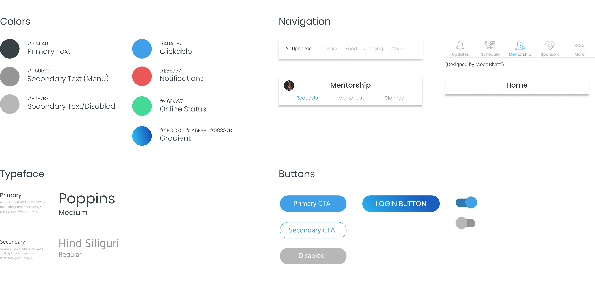Colors, fonts, and components of the 2017 HTN Mobile App
Login
For the login screens, I took out the unnecessary steps required to login. I designed the login screen to be much more simple. I also added a touch of a blue gradient to the login button.
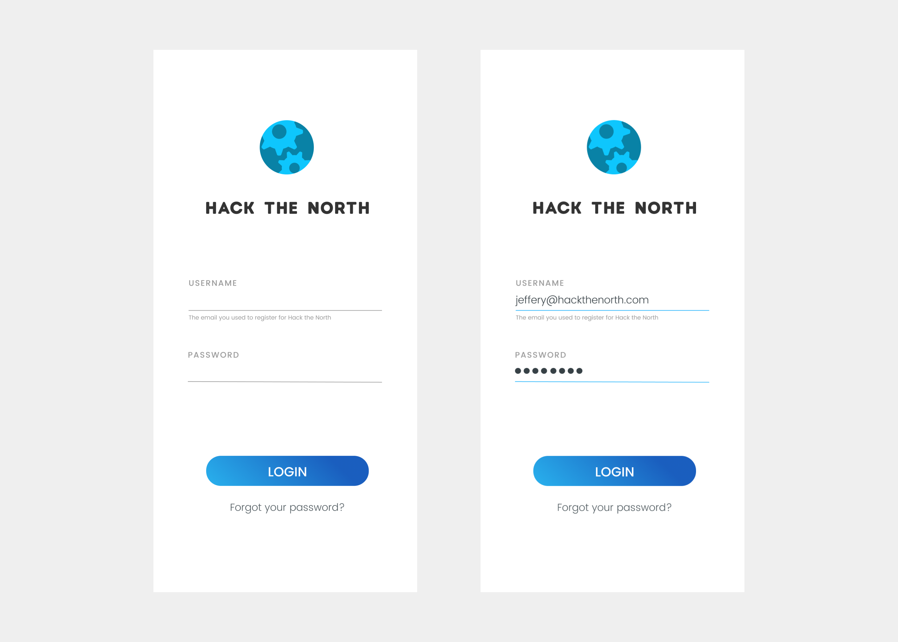2017 Login Screens
Updates
I added a timer where hackers can check when hacking ends. Users are able to hide and unhide the timer by clicking on the chevron on the top right of the timer. Unfortunately, this feature of the app did not get implemented as we had time constraints but the front-end team was able to implement this timer on the day-of event website! I also added a filter so users can filter out updates based on what they want to see. The text is also much more readable and easier to look at by adding more white space. Another small feature we added to Updates was the blue dot beside the title of a post. The blue dot means that a new update was posted that the user did not see yet.
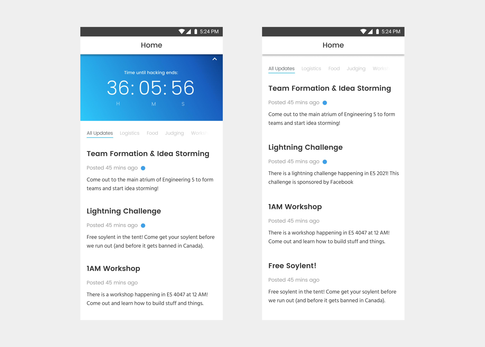2017 Updates Screens
Profile
The user's profile is used for the mentoring feature of the app. On a user's profile, you are able to see a small description, contact information and social media, and skills. I wanted to give the user the ability to link their social media and websites so that they are able to connect with other hackers as well. Networking and meeting other hackers is one of the many great experiences a hackathon has to offer.
I also improved the experience of editing a user's profile. In the skills section, instead of selecting your skill from a list, you are now able to search for the skill. You are also not able input your skills unless the user is a mentor.
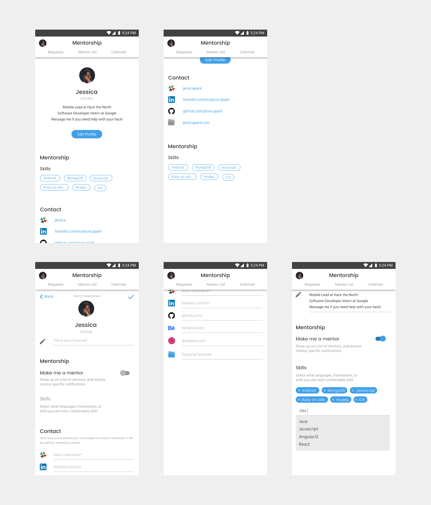2017 Profile Screens (what the user see)
We decided to take out the location field in the mentorship request feature. Instead, we decided to link Slack to the mobile app as we have a slack for the hackathon attendees. When you click on the message button, the button will take you to the user's profile. We also added an online status to a user's profile so the hackers are able to know who may be available right away.
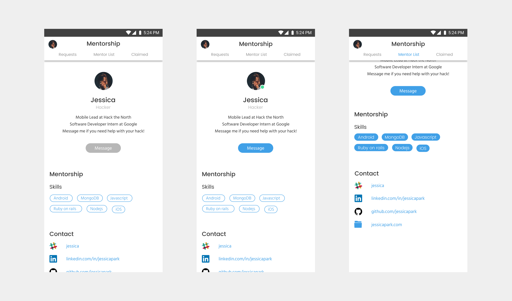2017 Profile Screens (what the others see)
Mentoring: List, Submit & Claim
On the mentoring list, I added a feature where you can filter mentors based on the categories: design, code, and hardware. That way, users are able to find mentors that are relevant to them much quicker. I also added the green dot to represent if a mentor is online or not.

2017 Mentor List Screens
On the Claim requests tab, users are also to filter out requests based on categories just like the mentor list. I also made sure that the requests are ordered from newest to oldest. Claimed is a new section where users can see requests they claimed or their own requests.
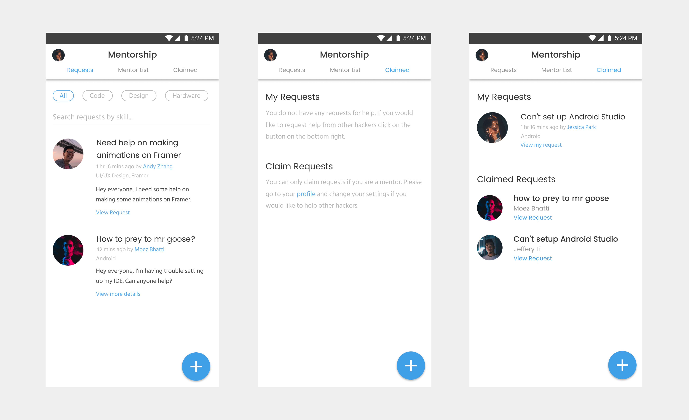2017 Mentor Request Screens
The layout of submitting a request has changed. Users are also now able to search for the skill instead of looking for it in a list. I also wanted to add a feature where you can upload a picture of your request (e.g. could be useful for hardware requests) but this feature unfortunately did not make it to the final version.
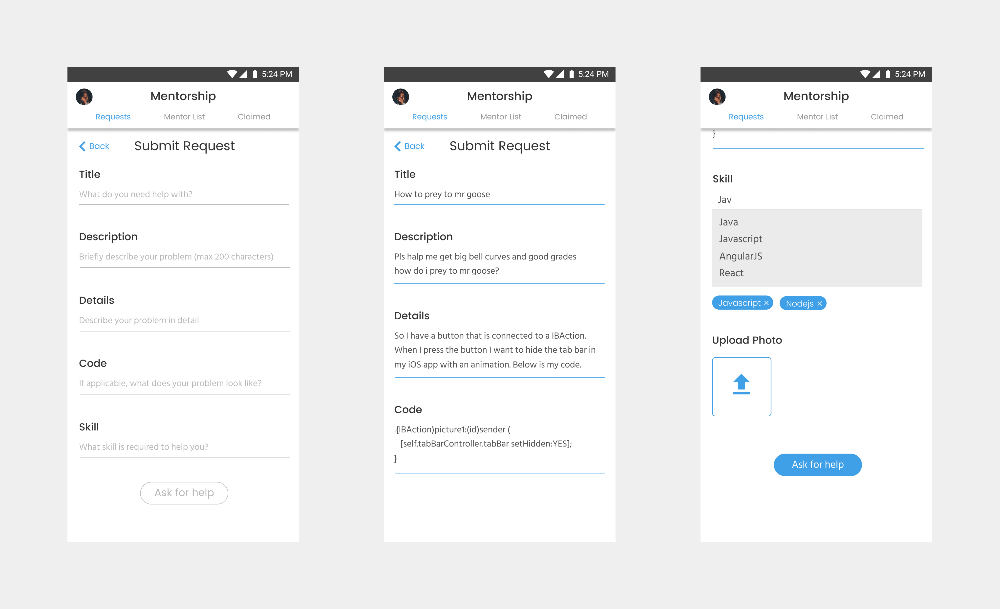2017 Submit Claims Screens
Other than some minor visual changes, we made sure to address the pain point where the user does not receive feedback from the system. When a mentor accepts a claim, a box will pop up with a button that would lead the mentor to Slack to message the hacker.
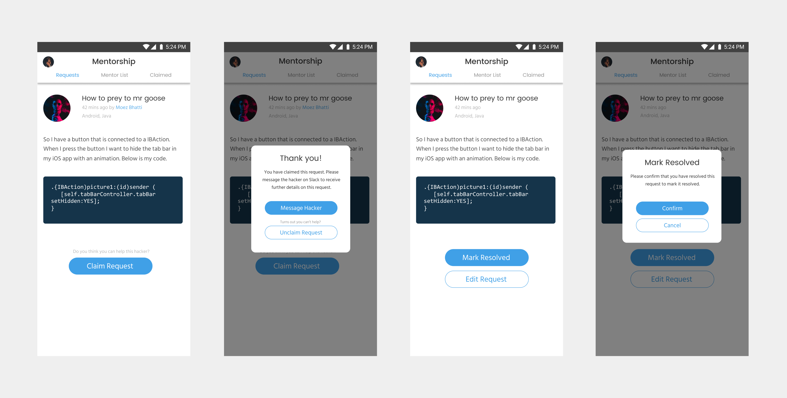2017 2017 HTN Mobile Accept & Submit Claim Screens
Conclusion
In the end, a lot of my final designs changed a lot when it was implemented on mobile. There were a few features that did not make it due to technical or time constraints. As this was my first mobile project, I was able to improve my visual design schools in app design and as well as learn and follow Google Material Design guidelines. Next time, I would like to properly plan the design and research for the next project. Because of my ability in time-management for this project, I was not able to further improve on the design of our mobile app as much as I could have been able to. Some research or user testing would have definitely improved our product.